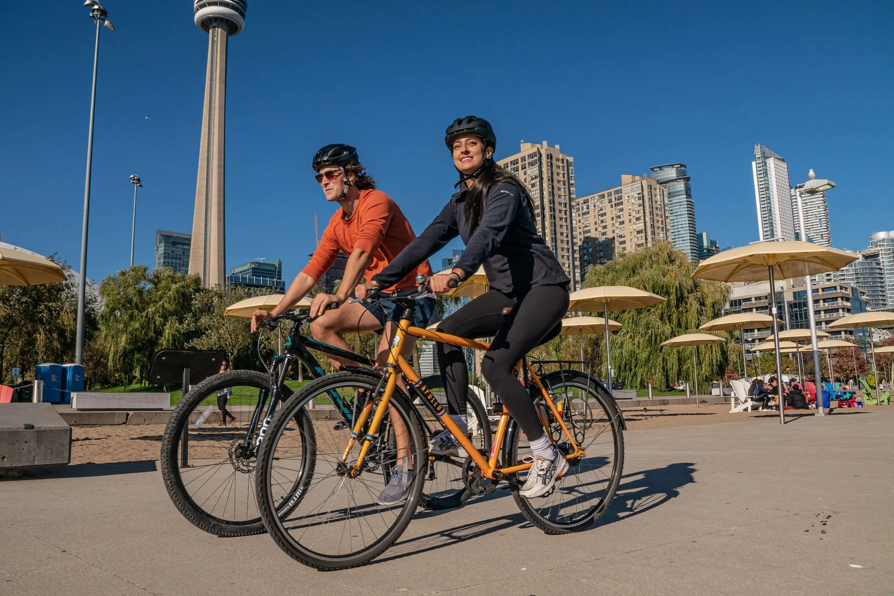

Cycling is a healthy and efficient mode of transportation in urban areas. Long-distance bike routes support commuters, recreational riders, and improve overall city mobility.
Access to amenities such as water fountains, bike racks, and washrooms makes cycling more convenient and encourages sustainable travel.
